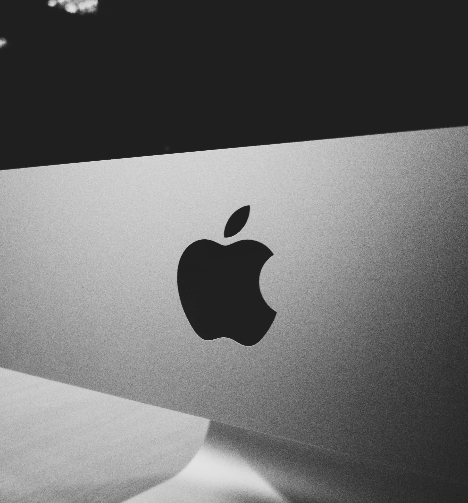

Todos os dias, onde quer que estivermos, somos bombardeados por uma infinidade de logotipos diferentes. Seja um ícone, um emblema, uma sigla ou uma palavra (ou a combinação de tudo isso), todos esses símbolos buscam cumprir um papel em comum: comunicar a identidade visual de uma marca e torná-la memorável para o público. No entanto, são poucas as empresas que, em meio a tantos exemplos, conseguem criar um logotipo verdadeiramente único e indissociável da sua marca. A Apple, por sua vez, pode ser facilmente posicionada no seleto grupo de companhias que alcançaram tal proeza, afinal, é praticamente impossível sequer pensar nela sem que a famosa maçã mordida venha à nossa mente. Mas afinal, o que faz um logo tão icônico? O que faz a maçã mordida ser tão reconhecível quanto o cavalo rampante da Ferrari, o “M” do McDonald’s ou o Swoosh da Nike? Neste artigo, iremos dar uma olhada em como se deu o processo criativo que levou até a criação do famoso logotipo da Apple e as diversas mudanças sofridas pelo ícone ao longo dos seus quase 45 anos de existência — a fim de entender não só sua história, mas o que o faz tão marcante.
A criação da maçã mordida
A tarefa de criar um logotipo mais moderno e objetivo para a Apple caiu então nas mãos do designer gráfico Rob Janoff, contratado por Jobs em 1977. Após se reunir pela primeira vez com o executivo no começo daquele ano, Janoff passou cerca de uma semana e meia estudando a forma de maçãs reais e desenhando vários rascunhos do que viria a se tornar o seu primeiro e único protótipo.
Foi muito simples, na verdade. Apenas comprei um monte de maçãs, coloquei-as em uma tigela e as desenhei por uma semana ou mais para simplificar a forma.
O nome da companhia, por sua vez, aparece estampado em duas flâmulas que envolvem a moldura central. Por motivos óbvios, essa primeira versão não durou muito tempo. Seu alto nível de detalhes prejudicava sua reprodução em produtos e materiais impressos, além de não ser facilmente identificável vista de longe. Steve Jobs também acreditava que o visual vintage do logotipo não conseguia transmitir com precisão a filosofia da empresa, além de não ter um apelo forte com o público jovem. Dessa forma, o logo newtoniano foi finalmente aposentado por Jobs menos de um ano após a sua criação.
A criação da maçã mordida
A tarefa de criar um logotipo mais moderno e objetivo para a Apple caiu então nas mãos do designer gráfico Rob Janoff, contratado por Jobs em 1977. Após se reunir pela primeira vez com o executivo no começo daquele ano, Janoff passou cerca de uma semana e meia estudando a forma de maçãs reais e desenhando vários rascunhos do que viria a se tornar o seu primeiro e único protótipo.
Foi muito simples, na verdade. Apenas comprei um monte de maçãs, coloquei-as em uma tigela e as desenhei por uma semana ou mais para simplificar a forma.
Nascia, então, a primeira versão da boa e velha maçã mordida, que na época ainda contava com o clássico arco-íris em alusão ao vindouro Apple II — o primeiro computador pessoal do mundo com um display colorido. O logotipo foi prontamente aprovado por Jobs e adotado em todos os produtos, comerciais e documentos da empresa pelas próximas duas décadas.